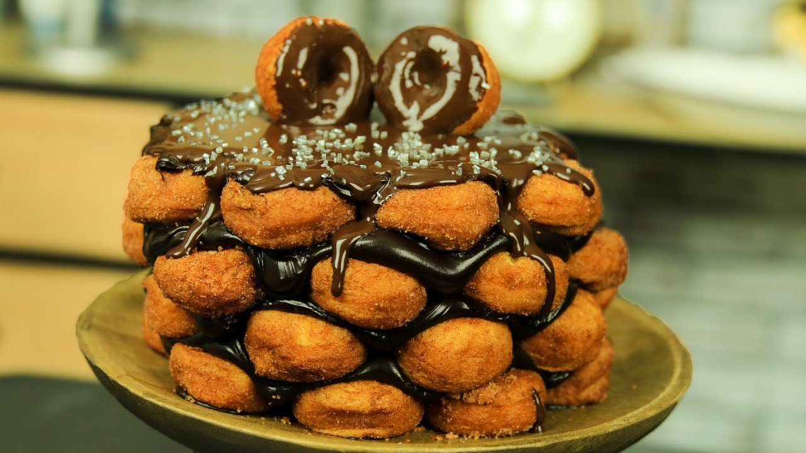

6 paquetes de donas bimbo (la cantidad depende del tamaño del pastel).
Azúcar de color para decorar
Ganache de chocolate
Base para el pastel
100ml de agua
90ml de crema de batír
170g de azúcar
75g de cocoa en pólvo
10g de grenetina

Preparación
Primero se colocan varias donas en la base (unas 12 aprox.), cuando tengas las donas acomodadas, pegarás las donas a la base usando el ganache, esta será tu base del pastel.
Cubrirás el primer piso de tu astel con ganache para poder poner el siguente piso de donas.
Una vez tengas 4 capas de donas para tu pastel, siguiendo los mismos pasos anteriores, presiona con cuidado para que ninguna dona se mueva de su lugar.
En la última base de donas debes cubrir todos los huequitos que podrian haber quedado con ganache, despues agrega bastante más y con una espatula o cuchara espárcelo bien por toda la superficie.
El siguiente paso es meter por unos momentos el pastel al refrigerador para que endurezca un poco el ganache.
En una olla agrega el agua, la crema de bátir y el azúcar y prende la estufa a fuego lento y bate hasta que se mezcle y empiece a hervir.
Una vez esté hirviendo la mezcla, agrega cocoa en polvo con un coladory apaga el fugo, asegurate que una vez lo apagues, empieces a batír hasta que todo quede bien integrado.
Hidrata los 10g de grenetina con un poco de agua y en unos cuantos minutos se pondrá firme, una vez eso suceda, lo meteras al microondas hasta que esta se derrida.
En un plato agrega la grenetina y ponle un poco de la mezcla de chocolatey batelo super bien
Cuando esté lista la grenetina con chocolate, agregala al resto de la mezcla de chocolate y mezcla hasta que se incorpore todo.
Una vez termines de mezclar, saca el pastel del refrigerador y agrega la mezcla de chocolate desde el centro y asegurate de cubrir todo el pastel, cuando termines ponle encima el azúcar de color como decoración, Y LISTO.